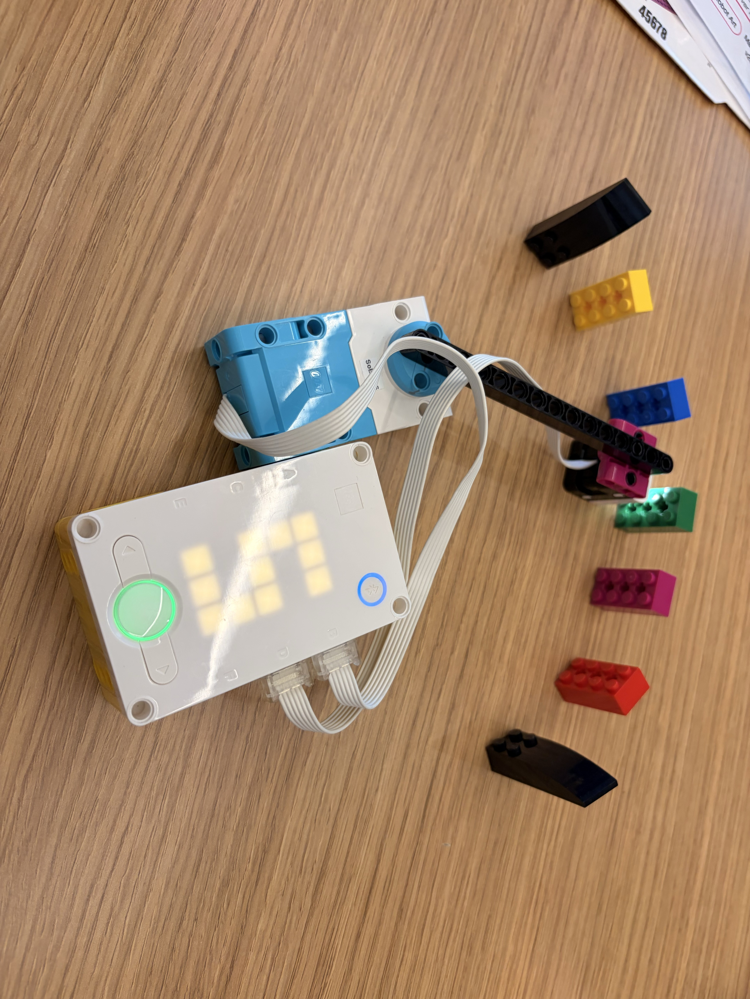

In this project, I learned how reinforcement learning works using a color finder machine built with LEGO Spike Prime.
The setup: A Color Sensor on the end of a swinging arm scans a row of LEGO bricks laid out in an arc. The goal is the green brick, and the black bricks at both ends are boundaries. The robot does not know where the goal is, or even which colors are on the track. It discovers them as it explores.
How reinforcement learning works: The agent (the brain) chooses an action, and the environment reacts. The robot reads its new state with its sensor and gets a reward, or a penalty (a negative reward), depending on whether the result was good or bad. By linking each state and action with the reward it got, the agent learns which actions are good. It starts out completely blank, with just the algorithm and a platform to work in.
Exploration vs. exploitation: Exploitation means using what the model has already learned, while exploration means trying random actions so the agent can keep learning. A good model balances the two. Often, the exploration rate follows a decay graph: the agent explores a lot at the start and mostly exploits by the end. In this program, the exploration rate stays at 0.1, so the robot makes a random move about 10% of the time during training and never explores during testing.
The Q-table: The agent keeps score in a Q-table, which is printed in the console after every run. Each row is a state (where am I?), each column is an action (what can I do?), and each cell holds a Q-value: a score for how good that action is in that state. The table starts empty, and each time the robot discovers a new color, it adds a row of zeros.
Training and testing: Pressing the right button runs one training episode. The robot turns its arm left or right from brick to brick and updates its Q-values based on the rewards: +10 for reaching the goal, -10 for hitting a boundary, and -1 for every other move, so shorter paths score better. Pressing the left button runs a test (the inference phase), where the robot always picks the action with the highest Q-value and does not learn.
Reading the Q-table: The states are the brick colors other than the goal and the boundaries, and the actions are turning left or turning right. Because every move costs -1 and hitting a boundary costs -10, Q-values can be negative. At magenta, turning right was the best move: still negative, but the least negative. At red, turning left was the least negative. At azure, turning right had the most positive value, and at yellow, turning right was almost always the best move.
We used a color finder program first developed by Tanushree Burman at Tufts CEEO. Here is the part of the code where the agent chooses an action (exploring or exploiting) and then learns from the reward using the Q-learning update rule.
def choose_action(self, state, epsilon):
"""Epsilon-greedy: usually EXPLOIT (pick the best known action),
but with probability epsilon EXPLORE (pick a random action).
Returns (action, explored)."""
if random.random() < epsilon:
return random.randint(0, len(self.q[state]) - 1), True
return self.best_action(state), False
def learn(self, state, action, reward, next_state, done):
"""The Q-learning update rule:
new Q = old Q + alpha * (reward + gamma * best_next - old Q)
best_next is the best Q-value in the state we landed in: how good
things look from here on. If the episode is over there is no future,
so best_next is 0. Returns (old Q, best_next, new Q)."""
old = self.q[state][action]
if done:
best_next = 0.0
else:
best_next = max(self.q[next_state])
target = reward + self.gamma * best_next
new = old + self.alpha * (target - old)
self.q[state][action] = new
return old, best_next, new